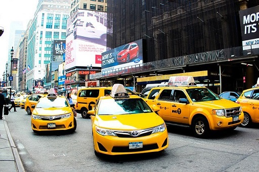

THE NEW TOWN
The new town that just developed just amonth ago,
the town has come up with new method to the town,which all the world are trying to follow.
This method helps the town alot the method of gorvernment taxi
to carry people fromone place to another.